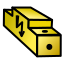

Cables Workbench/fr
Introduction
L' atelier Cables est un ensemble d'outils pour la modélisation des installations électriques dans les projets de conception architecturale. Il est conçu pour aider à faire passer des câbles à l'intérieur de bâtiments ou d'autres objets et pour construire des modèles de câbles avec la possibilité de faire des connexions à fil unique. Il s'agit d'un atelier externe.
atelier Cables est un ensemble d'outils pour la modélisation des installations électriques dans les projets de conception architecturale. Il est conçu pour aider à faire passer des câbles à l'intérieur de bâtiments ou d'autres objets et pour construire des modèles de câbles avec la possibilité de faire des connexions à fil unique. Il s'agit d'un atelier externe.
Cet ensemble d'outils peut être utilisé pour créer des boîtes électriques ou d'autres éléments électriques prêts à l'emploi (la liste des éléments sera, nous l'espérons, élargie à l'avenir). Ces éléments peuvent être connectés avec des câbles entièrement paramétrables de différents profils, nombres de fils et épaisseurs. Il existe quelques profils de câbles prédéfinis, mais il est également possible de créer des profils personnalisés non standard à l'aide d'un simple fichier CSV.
Les modèles construits avec cet atelier permettent de repositionner facilement les éléments sans rompre les connexions. Les câbles peuvent adapter leur forme à de nouvelles positions. Toutefois, cette fonctionnalité n'est pas encore parfaite.
L'atelier vise à être compatible avec l'atelier BIM (les objets solides créés ici doivent avoir les mêmes attributs et propriétés de base que les autres objets BIM : matériaux, type IFC et attributs IFC, etc.), mais il peut être utilisé à d'autres fins que la conception architecturale. Depuis la version 0.3.0, l'atelier est également devenu plus adapté à la modélisation des connexions entre les circuits imprimés, à l'intérieur des machines, etc. Il permet de créer des bibliothèques personnalisées de connecteurs, de boîtiers et d'appareils électriques (toute aide pour créer, par exemple, un ensemble de connecteurs prêts à l'emploi est la bienvenue).
Pour consulter le tableau de compatibilité de la version actuelle de l'atelier Cables, voir : Compatibilité avec l'atelier BIM.

Exemple de boîtes murales et de câbles
Version animée ici

Exemple de câble plat à trois conducteurs :
Forme de câble multimatériau et son fil de base, son profil et ses fils secondaires.


À gauche : exemple de boîtier de distribution avec des dispositifs électriquess.
À droite : exemple de câble terminé par des connecteurs
Installation
Cet atelier peut être installé à partir du  gestionnaire des extensions. Pour une installation manuelle, voir Installer des ateliers supplémentaires.
gestionnaire des extensions. Pour une installation manuelle, voir Installer des ateliers supplémentaires.
Outils
Les outils de câblage sont divisés en plusieurs groupes en fonction de leur objectif.
Outils de création et de manipulation de fils
 WireFlex : crée un nouvel objet WireFlex tendu entre deux ou plusieurs sommets/objets sélectionnés.
WireFlex : crée un nouvel objet WireFlex tendu entre deux ou plusieurs sommets/objets sélectionnés.
 Ajouter un sommet : crée un sommet supplémentaire sur une arête WireFlex sélectionnée.
Ajouter un sommet : crée un sommet supplémentaire sur une arête WireFlex sélectionnée.
 Supprimer un sommet : supprime un sommet d'un objet WireFlex sélectionné.
Supprimer un sommet : supprime un sommet d'un objet WireFlex sélectionné.
 Attacher un sommet : attache le sommet d'un WireFlex sélectionné à un sommet/objet externe.
Attacher un sommet : attache le sommet d'un WireFlex sélectionné à un sommet/objet externe.
 Supprimer la connexion d'un sommet : supprime la connexion d'un sommet d'un WireFlex sélectionnée d'un sommet/objet externe.
Supprimer la connexion d'un sommet : supprime la connexion d'un sommet d'un WireFlex sélectionnée d'un sommet/objet externe.
 Connecter un câble à une terminaison : permet de connecter l'extrémité du fil à la terminaison (introduit dans la version 0.3.0).
Connecter un câble à une terminaison : permet de connecter l'extrémité du fil à la terminaison (introduit dans la version 0.3.0).
 Déconnecter un câble d'une terminaison : retire la fixation de l'extrémité de la terminaison (introduit dans la version 0.3.0).
Déconnecter un câble d'une terminaison : retire la fixation de l'extrémité de la terminaison (introduit dans la version 0.3.0).
 Composite : crée un nouvel objet CompoundPath basé sur les objets sélectionnés (introduit dans la version 0.2.0). Il crée un objet wire à partir d'un groupe d'autres objets wire. Sa forme topologique est un composé de formes de polylignes ou une forme d'une polyligne unique.
Composite : crée un nouvel objet CompoundPath basé sur les objets sélectionnés (introduit dans la version 0.2.0). Il crée un objet wire à partir d'un groupe d'autres objets wire. Sa forme topologique est un composé de formes de polylignes ou une forme d'une polyligne unique.
 Éditer : modifie l'objet Wireflex actif (introduit dans la version 0.2.0).
Éditer : modifie l'objet Wireflex actif (introduit dans la version 0.2.0).
Outils pour la fabrication de câbles et d'autres éléments prêts à l'emploi
 Profil : ajoute un nouveau profil de câble au document en cours.
Profil : ajoute un nouveau profil de câble au document en cours.
 Câble : ajoute un nouveau câble en fonction de la polyligne et du profil sélectionnés.
Câble : ajoute un nouveau câble en fonction de la polyligne et du profil sélectionnés.
 Gaine : ajoute une gaine de câble basée sur la polyligne sélectionnée (introduit dans la version 0.2.0).
Gaine : ajoute une gaine de câble basée sur la polyligne sélectionnée (introduit dans la version 0.2.0).
 Boîte : ajoute une boîte paramétrique pour des câbles.
Boîte : ajoute une boîte paramétrique pour des câbles.
 Connecteur : ajoute un connecteur de câble paramétrique.
Connecteur : ajoute un connecteur de câble paramétrique.
 Source lumineuse : ajoute un point lumineux paramétrique pour câble.
Source lumineuse : ajoute un point lumineux paramétrique pour câble.
-  Dispositif électrique : ajoute un nouveau dispositif électrique (introduit dans la version 0.3.0).
{kind=link}
 Matériau : ajoute un ensemble de multimatériaux par défaut au document.
Matériau : ajoute un ensemble de multimatériaux par défaut au document.
Objets dépendants
Ces objets ne peuvent pas être créés directement. Ils sont conçus pour coexister avec les objets Boîte, Connecteur, Source lumineuse ou Dispositif électrique en fonction de leur configuration.
 Terminaison : contient un objet terminal de câble paramétrique (introduit dans la version 0.3.0).
Terminaison : contient un objet terminal de câble paramétrique (introduit dans la version 0.3.0).
 SuppLines : contient un objet SuppLines (introduit dans la version 0.3.0).
SuppLines : contient un objet SuppLines (introduit dans la version 0.3.0).
Outils d'assistance
Ces outils sont principalement utilisés pour organiser et simplifier les ancrages d'autres objets. Ils peuvent également être utilisés avec succès avec d'autres ateliers.
 Point : ajoute un point.
Point : ajoute un point.
 Ligne : ajoute une ligne.
Ligne : ajoute une ligne.
 Ancrer en place : permet d'ancrer un objet sans modifier son emplacement global (introduit dans la version 0.3.0).
Ancrer en place : permet d'ancrer un objet sans modifier son emplacement global (introduit dans la version 0.3.0).
 Désactiver l'ancrage : désactive l'ancrage des objets sélectionnés (introduit dans la version 0.3.0).
Désactiver l'ancrage : désactive l'ancrage des objets sélectionnés (introduit dans la version 0.3.0).
Outils externes
 Basculer la grille : modifie la visibilité de la grille.
Basculer la grille : modifie la visibilité de la grille.
Remarques
Cet atelier est actuellement en phase alpha. Vous pouvez vous attendre à quelques bogues qui peuvent rendre votre modèle cassé. Certaines propriétés des modèles peuvent changer dans le futur et casser les modèles créés avec la version en cours. Les pages du wiki relatives à cet atelier peuvent également être modifiées de manière significative à l'avenir. Tous les commentaires et les nouvelles idées sont les bienvenus. Veuillez envoyer vos commentaires et rapports par les canaux spécifiés dans Références.
Description du flux de travail typique=
- Créez des extrémités de câbles, par exemple : Boîtes ou Source lumineuse et les disposer dans un espace 3D.
- Créez des polylignes de base reliant les extrémités créées avec WireFlex et les disposer dans un espace 3D à l'aide de lignes ou points.
- Créez des profils de câbles adapté au projet.
- Créez des câbles sur la base des câbles de base et des profils existants.
- Colorez les câbles avec les matériaux prédéfinis ou personnalisés.
- Enfin (et facultativement), connectez les câbles sélectionnés par des connecteurs.
Tutoriels et exemples
Exemples de documents FreeCAD avec câbles :
- Exemples livrés avec le code source
Exemples par des images animées :
- Exemple de flux de travail simple
- Exemples de déplacement de WireFlex
- Exemple d'utilisation d'une boîte de câbles
- Exemple d'utilisation d'un connecteur de câble
Tutoriels :
Tutoriels vidéo/exemples :
Références
- Auteur :
- Code source sur GitHub : https://github.com/sargo-devel/Cables
- Forum FreeCAD : https://forum.freecad.org/viewtopic.php?t=94090
- Signaler les bogues ici